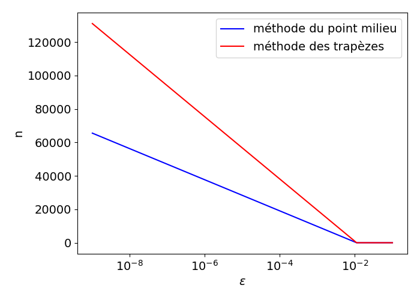
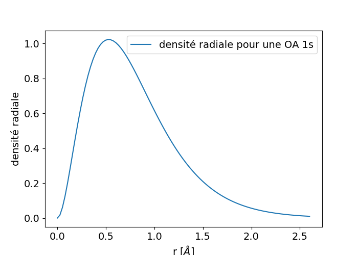

Exercice 1: Vitesse d'une fusée
Exercice 2: Valeur approchée de \( \pi \)
Exercice 3: Intégration adaptative
Exercice 4: Intégration de x élevé à x
Exercice 5: Orbitales atomiques
On lance une fusée verticalement du sol et l’on mesure pendant les premières 80 secondes l'accélération \( \gamma \):
| t[s] | 0 | 10 | 20 | 30 | 40 | 50 | 60 | 70 | 80 |
| \( \gamma \) [m $s^{-2}$] | 30 | 31.63 | 33.44 | 35.47 | 37.75 | 40.33 | 43.29 | 46.70 | 50.67 |
Calculer la vitesse \( V \) de la fusée à l’instant \( t=80 \ s \), par la méthode des trapèzes.
On sait que l’accélération \( \gamma \) est la dérivée de la vitesse \( V \), donc, $$ \begin{align*} V(t) &= \int_0^t \gamma(s) ds \\ I &= V(80) = \int_0^{80} \gamma(s) ds \end{align*} $$ Calculons \( I \) par la méthode des trapèzes. Ici, d’après le tableau des valeurs, \( h = 10 \). $$ \begin{equation*} I \approx h \left[\frac{1}{2}f(x_0) + \sum_{i=1}^{n-1}f(x_i) + \frac{1}{2}f(x_n) \right] \end{equation*} $$ $$ \begin{align*} I &\approx 10 \left[\frac{1}{2} \times 30 + \frac{1}{2} \times 50.67 + 31.63 + 33.44 + \ldots + 46.70 \right] \\ &\approx 3089.45 \quad ms^{-1} \end{align*} $$
h = 10
I = 0.5 * (30 + 50.67) # 1/2 * [f(x0) + f(xn)]
fx = [31.63,33.44,35.47,37.75,40.33,43.29,46.70] # f(x1) ---> f(xn-1)
for i in range(len(fx)):
I+= fx[i]
I*=h
print(I, "ms^-1")
Étant donnée l'égalité: $$ \begin{equation} \pi = 4 \left( \int_0^\infty e^{-x^2} dx \right)^2 = 4 \left( \int_0^{10} e^{-x^2} dx + \epsilon \right)^2 \label{_auto1} \end{equation} $$ avec \( 0 < \epsilon < 10^{−44} \) , utiliser la méthode des trapèzes composite à \( 10 \) intervalles pour estimer la valeur de \( \pi \).
La méthode des trapèzes composite à \( n \) intervalles pour calculer l’intégrale d’une fonction f sur l’intervalle \( [a, b] \) s’écrit $$ \begin{equation*} \int_a^b f(x)\,dx \approx h \left[\frac{1}{2}f(x_0) + \sum_{i=1}^{n-1}f(x_i) + \frac{1}{2}f(x_n) \right] \end{equation*} $$ avec \( h = \frac{b-a}{n} \) et \( x_i = a + ih,\quad i = 0,1,\ldots,n \)
Ici on a \( f (x) = e^{-x} \) , \( a = 0 \), \( b = 10 \), \( n = 10 \) d’où \( h = 1 \) et on obtient
$$
\begin{equation*}
I \approx \frac{1}{2} + \sum_{i=1}^{9} e^{-i} + \frac{1}{2e^{100}} = \frac{1}{2} + \frac{1}{e} + \frac{1}{e^{4}} + \frac{1}{e^{9}} + \frac{1}{e^{16}} + \frac{1}{e^{25}} + \frac{1}{e^{36}} + \frac{1}{e^{49}} + \frac{1}{e^{64}} + \frac{1}{e^{81}} + \frac{1}{2e^{100}}
\end{equation*}
$$
ainsi en utilisant la fonction trapeze(f,a,b,n) du module trapeze_integral.py décrite dans le cours comme suit
from trapeze_integral import trapeze
from math import exp
f = lambda x: exp(-x**2)
I = trapeze(f, 0, 10, 10)
print(4*I**2)
on obtient \( \pi \approx 4I^2 = 3.14224265994 \).
Supposons que nous voulons utiliser la méthode des trapèzes ou du point milieu pour calculer une intégrale \( \int_a^b f(x)dx \) avec une erreur inférieure à une tolérance prescrite \( \epsilon \). Quelle est la taille appropriée de \( n \)?
Pour répondre à cette question, nous pouvons entrer une procédure itérative où nous comparons les résultats produits par \( n \) et \( 2n \) intervalles, et si la différence est inférieure à \( \epsilon \), la valeur correspondant à \( 2n \) est retournée. Sinon, nous avons \( n \) et répétons la procédure.
Il peut être une bonne idée d'organiser votre code afin que la fonction integration_adaptive peut être utilisé facilement dans les programmes futurs que vous écrivez.
a)
Écrire une fonction integration_adaptive(f, a, b, eps, method="midpoint") qui implémente l'idée ci-dessus (eps correspond à la tolérance \( \epsilon \), et la méthode peut être midpoint ou trapeze).
En facilitant les réponses à l'ensemble de cet exercice, ainsi qu'en préparant l'utilisation facile de l'intégration adaptative dans les futurs programmes, nous organisons le codage des tâches a, b et c en un seul fichier, ce qui en fait un module. Le code se lit alors:
## NOM DU PROGRAMME: integration_adaptive.py
#% IMPORTATION
from numpy import linspace, zeros, sqrt
from trapeze_integral import trapeze
from midpoint_integral import midpoint
def integration_adaptative(f, a, b, eps, method='midpoint'):
'''
Question a)
'''
n_limit = 1000000 # Juste un choix (utilisé pour éviter la boucle inf)
n = 2
if method == 'trapeze':
integral_n = trapeze(f, a, b, n)
integral_2n = trapeze(f, a, b, 2*n)
diff = abs(integral_2n - integral_n)
while (diff > eps) and (n < n_limit):
integral_n = trapeze(f, a, b, n)
integral_2n = trapeze(f, a, b, 2*n)
diff = abs(integral_2n - integral_n)
n *= 2
elif method == 'midpoint':
integral_n = midpoint(f, a, b, n)
integral_2n = midpoint(f, a, b, 2*n)
diff = abs(integral_2n - integral_n)
while (diff > eps) and (n < n_limit):
integral_n = midpoint(f, a, b, n)
integral_2n = midpoint(f, a, b, 2*n)
diff = abs(integral_2n - integral_n)
n *= 2
else:
print('Erreur - intégration adaptative appelée avec un paramètre inconnu')
# Maintenant, nous vérifions si un n acceptable a été trouvé ou non
if diff <= eps: # Succès
print("L'intégrale calcule: ", integral_2n)
return n
else:
return -n # Renvoie n négatif pour dire "non trouvé"
def application():
"""Questions b) and c)"""
g = lambda x: sqrt(x)
# eps = 1E-1 # Il suffit de basculer entre ces deux valeurs eps
eps = 1E-10
a = 0.0 + 0.01 # Si nous ajustons a, sqrt (x) est géré facilement
b = 2.0
n = integration_adaptative(g, a, b, eps, 'midpoint')
if n > 0:
print('n suffisant est: %d'%(n))
else:
print("Aucun n n'a été trouvé dans %d iterations" % (n_limit))
# c) faire un tracé pour le point milieu et les trapèzes
eps = linspace(1E-1,10E-10,10)
n_m = zeros(len(eps))
n_t = zeros(len(eps))
for i in range(len(n_m)):
n_m[i] = integration_adaptative(g, a, b, eps[i], 'midpoint')
n_t[i] = integration_adaptative(g, a, b, eps[i], 'trapeze')
import matplotlib.pyplot as plt
plt.figure(figsize=(7,5))
plt.plot(eps,n_m,'b-', label = "méthode du point milieu")
plt.plot(eps,n_t,'r-', label = "méthode des trapèzes")
plt.xlabel(r'$\epsilon$')
plt.ylabel('n')
plt.xscale("log")
plt.legend()
plt.show()
if __name__ == '__main__':
application()
b) Testez la méthode sur \( g(x) = \int_0^2\sqrt{x}dx \) pour \( \epsilon = 10^{−1},10^{−10} \) et notez l'erreur exacte.
Voir le code ci-dessus. Notez que, dans notre code suggéré, il est prévu que le programmeur bascule entre les deux valeurs epsilon en utilisant des commentaires, c'est-à-dire en ajoutant/supprimant #. Cela peut bien sûr être évité, si cela est souhaitable, en demandant à l'utilisateur d'entrer un valeur d'epsilon.
c) Faites un tracé de \( n \) en fonction de \( \epsilon \in [10^{-1}, 10^{-10}] \) pour \( \int_0^2\sqrt{x}dx \). Utilisez l'échelle logarithmique pour \( \epsilon \).
Figure 1: Affichage de n en fonction de \( \epsilon \) lorsque \( \int_0^2\sqrt{x}dx \) est calculé par la méthode du point milieu (bleu) et la méthode des trapèzes (rouge).

La figure 1 montre que plus la valeur d'epsilon est stricte, plus la différence entre les méthodes du point milieu et des trapèzes est grande. Pour une valeur donnée pour epsilon, la méthode du point milieu se situe dans la tolérance avec moins d'intervalles (valeur inférieure de \( n \)) que la méthode des trapèzes. Il faut s'y attendre, car la méthode du point milieu est un peu plus précise que la méthode des trapèzes.
Une façon de produire ce tracé est d'utiliser les lignes de code incluses à la fin de integration_adaptive.py (voir ci-dessus).
Le type de méthode exploré dans cet exercice est appelé adaptatif, car il essaie d'adapter la valeur de n pour répondre à un critère d'erreur donné. La vraie erreur peut très rarement être calculée (car nous ne connaissons pas la réponse exacte au problème de calcul), il faut donc trouver d'autres indicateurs de l'erreur, comme celui ici où les changements de la valeur intégrale, comme le nombre d'intervalles est doublé, est pris pour refléter l'erreur.
Considérons l'intégrale
$$
\begin{equation*}
I = \int_0^2 x^x\,dx\thinspace .
\end{equation*}
$$
L'intégrande \( x^x \) n'a pas de primitive qui peut être exprimé en termes de fonctions standard (visitez http://wolframalpha.com et tapez integral x^x dx from 0 to 2 pour vous convaincre que notre affirmation est juste. Notez que Wolfram alpha vous donne une réponse, mais cette réponse est une approximation, elle n'est pas exacte. C'est parce que Wolfram alpha utilise également des méthodes numériques pour arriver à la réponse, comme vous le ferez dans cet exercice). Par conséquent, nous sommes obligés de calculer l'intégrale par des méthodes numériques. Calculez un résultat composé de quatre chiffres.
Utilisez des idées de l'exercice Exercice 3: Intégration adaptative.
Lorsque la fonction integration_adaptive est disponible, le code peut s'écrire:
## NOM DU PROGRAMME: xtox.py
#% IMPORTATION
from integration_adaptive import integration_adaptative
def f(x):
return x**x
eps = 1E-4
a = 0.0; b = 2.0
# Choisir la méthode milieu
n = integration_adaptative(f, a, b, eps, 'midpoint')
if n > 0:
print('n suffisant est: %d'%(n))
else:
# Le n négatif est renvoyé pour signaler que la limite supérieure de n
# a été dépassée
print("Aucun n n'a été trouvé dans %d iterations" % (abs(n)))
N'oubliez pas que integration_adaptive affiche l'intégrale calculée, donc aucun effort à cet égard n'est requis ici.
L'exécution du programme donne une impression à l'écran montrant comment la différence devient de plus en plus petite à chaque fois. Les deux lignes de l'impression se lisent comme suit:
L'intégrale calcule: 2.8338439595776044
n suffisant est: 256
La valeur calculée peut être comparée à ce que donne Wolfram alpha. N'oubliez pas qu'étant donné que nous n'avons pas calculé l'erreur exacte, nous ne pouvons garantir que le "résultat est correct à quatre chiffres". Cependant, nous avons des raisons de croire que nous "sommes proches". Typiquement, lorsque l'on sait que la mesure d'erreur utilisée n'est pas précise, la tolérance est rendue plus stricte.
Pour décrire la trajectoire d'un électron autour d'un noyau, une description probabiliste est adoptée : l'électron n'est plus caractérisé par ses coordonnées spatiales mais par sa probabilité de présence en un point de l'espace.
Pour simplifier le problème, on considérera que cette probabilité de présence ne dépend que de la variable \( r \), distance entre l'électron et le centre du noyau. Pour une orbitale \( 1s \), la probabilité de trouver l'électron entre les rayons \( r_1 \) et \( r_2 \) s'écrit : $$ \begin{align*} P_{s1} = \int_{r_1}^{r_2} \underbrace{4 \times \frac{r^2}{a_0^3} \times e^{-2 \times \frac{r}{a_0}}}_\text{densité radiale} dr \end{align*} $$ avec \( a_0 = 0.529 \) $\AA$, appelé le rayon de Bohr.
La densité radiale, représentée dans la figure 2, est maximale pour \( r = a_0 \). Ce rayon qui maximise la densité radiale est appelé le rayon orbitalaire.
Figure 2: Densité radiale pour une orbitale atomique 1s.

a)
Définir une fonction densite_radiale(), définie entre \( 0 \) et \( \infty \) qui prend comme paramètre variable un rayon \( r \) et comme paramètre par défaut \( a_0 = 0.529 \) $\AA$ et renvoie la valeur \( 4 \times \frac{r^2}{a_0^3} \times e^{-2 \times \frac{r}{a_0}} \).
b) Tracer la densité radiale pour \( r \in [0, 2.6] \quad \AA \), afin d'obtenir le même graphique sur la figure 2.
c) On souhaite déterminer la probabilité de présence de l'électron entre \( 0 \) et \( a_0 \). Évaluer cette probabilité à l'aide de \( 100 \) rectangles. On pourra vérifier que la réponse obtenue est proche de \( 0.32 \).
d) Déterminer le nombre entier \( n \), tel que l'électron ait une probabilité supérieure ou égale à \( 90 \% \) de se trouver entre \( 0 \) et \( n*a_0 \).
e) On souhaite désormais évaluer la probabilité de trouver l'électron proche du rayon de Bohr, c'est-à-dire entre \( 0.9*a_0 \) et \( 1.1*a_0 \). Évaluer cette probabilité à l'aide de 100 rectangles.
f) D'après la valeur obtenue à la question précédente, que penser de la description des trajectoires des électrons par orbite autour du noyau ?
La solution de l'exercice est dans le programme python suivant:
## NOM DU PROGRAMME: OrbitalesAtomiques.py
#% IMPORTATION
import numpy as np
import matplotlib.pyplot as plt
from midpoint_integral import midpoint
# a)
def densite_radiale(r, a0 = 0.529):
return 4 * (r**2/a0**3) * np.exp(-2*(r/a0))
# b)
r = np.linspace(0,2.6, 100)
plt.figure(figsize=(7,5))
plt.plot(r, densite_radiale(r), label = "densité radiale pour une OA 1s")
plt.xlabel("r "+r"$[\AA]$")
plt.ylabel("densité radiale")
plt.legend()
plt.show()
# c) probabilité de présence de l’électron entre 0 et a0
a0 = 0.529
Pa0 = midpoint(densite_radiale, 0, a0, 100)
print("La probabilité de présence de l’électron entre 0 et a0 est: ", Pa0)
# d) rayon moyen de l'OA 1s
for n in range(21):
Prn = midpoint(densite_radiale, 0, n*a0, 100)
if Prn >= 0.90:
print("n = %d, Pr%d = %.4f"%(n,n,Prn))
'''
r90 = 3*a0. On dit donc que la rayon moyen de l'OA 1s de l'atome d'hydrogène
est une sphère de rayon 3*a0, soit à peu près 1.6 Å.
'''
# e)
Pr = midpoint(densite_radiale, 0.9*a0, 1.1*a0, 100)
print("La probabilité de présence de l’électron entre 0.9*a0 et 1.1*a0 est: ", Pr)
# La probabilité de présence de l’électron entre 0.9*a0 et 1.1*a0 est: 0.10790737203009312
# f) Conclusion
'''
* La densité radiale de probabilité de présence est maximale
pour r = a0 (rayon de Bohr) On dit que c'est le rayon le plus probable.
* Ce résultat est trompeur, car entre 0.9*a0 et 1.1*a0, la probabilité de présence
de l'électron n'est que de 11%.
* l'atome d'hydrogène est une sphère de rayon 3*a0, soit à peu près 1.6 Å.
* La probabilité de présence de l’électron 1s est plus élevée à l’extérieur
de l’orbite de Bohr.
'''